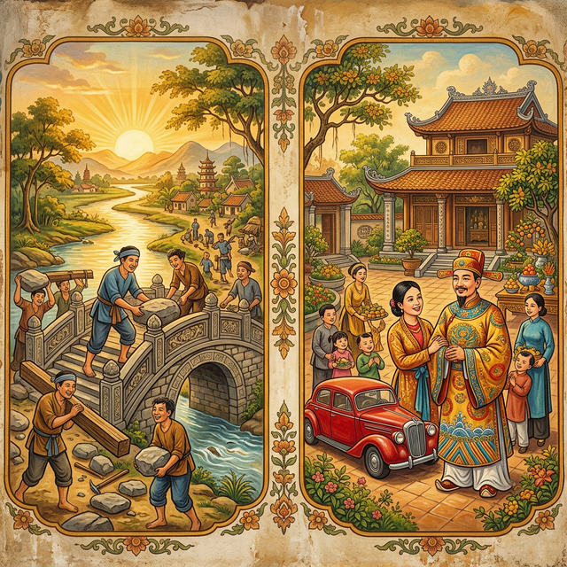
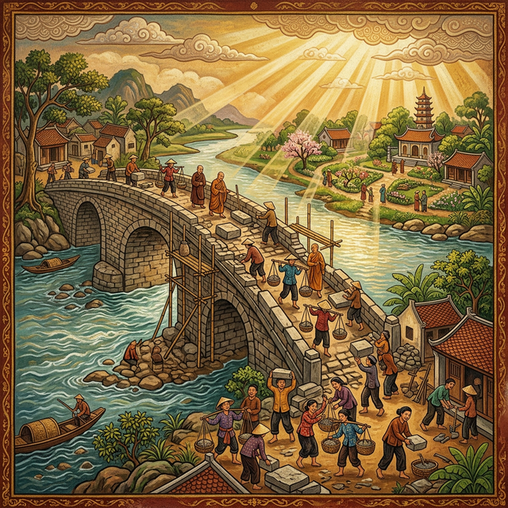
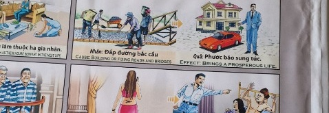

El Puente de la ProsperidadThe Cut CordIl cordone tagliato被割断的绳子الحبل المقطوعРазрезанный шнурDie durchtrennte SchnurLe cordon coupéカットされたコードO cordão cortadoSợi dây bị cắt
Quien olvida sus raíces marcha perdido en un mundo sin luz. Whoever forgets his roots lost marches in a world without light. Bất cứ ai cội nguồn của mình sẽ bước đi lạc lối trong một thế giới không có ánh sáng. Wer seine Wurzeln vergisst, geht verloren in einer Welt ohne Licht. Кто забывает свои корни, идет потерянным в мире без света. Celui qui oublie ses racines marche perdu dans un monde sans lumière. Chi dimentica le proprie radici cammina perduto in un mondo senza luce. Quem esquece suas raízes caminha perdido num mundo sem luz. ルーツを忘れた者は、光のない世界で迷子になって歩みます。 忘记自己根源的人在没有光的世界中迷失地游行。 من ينسى جذوره يمشي ضائعا في عالم بلا نور.
Entre todas las obras que un ser humano puede emprender sobre la tierra, la construcción de caminos, puentes e infraestructuras públicas ocupa un lugar de honor en el registro celeste del karma. Quien dedica su energía, su tiempo o sus recursos a erigir aquello que conecta a las personas entre sí está tejiendo las arterias doradas por las cuales fluye la bendición compartida...
Cada piedra colocada en un sendero, cada tabla clavada en un puente, cada obstáculo removido del paso de los viajeros se transforma en una moneda de luz depositada en la bóveda cósmica del alma. Es la inversión más sagrada que existe, porque sus rendimientos trascienden la vida presente y se multiplican a través de las encarnaciones.
La ley universal proclama con certeza inquebrantable que quien facilita el tránsito de los demás, quien repara lo que estaba roto y abre sendas donde antes solo había maleza, renacerá cobijado por la prosperidad, rodeado de abundancia que llega sin esfuerzo, como un río caudaloso que busca naturalmente el valle preparado para recibirlo.
Among all the works a human being can undertake upon the earth, the construction of roads, bridges and public infrastructure holds a place of honor in the celestial record of karma. Whoever devotes their energy, time or resources to building what connects people to one another is weaving the golden arteries through which shared blessing flows...
Every stone placed on a path, every plank nailed to a bridge, every obstacle removed from the way of travelers transforms into a coin of light deposited in the cosmic vault of the soul. It is the most sacred investment that exists, for its returns transcend the present life and multiply across incarnations.
Universal law proclaims with unbreakable certainty that whoever facilitates the transit of others, whoever repairs what was broken and opens paths where only undergrowth stood before, will be reborn sheltered by prosperity, surrounded by abundance that arrives effortlessly, like a mighty river that naturally seeks the valley prepared to receive it.
Tra tutte le opere che un essere umano può intraprendere sulla terra, la costruzione di strade, ponti e infrastrutture pubbliche occupa un posto d'onore nel registro celeste del karma. Chi dedica la propria energia, il proprio tempo o le proprie risorse a erigere ciò che connette le persone tra loro sta tessendo le arterie dorate attraverso cui scorre la benedizione condivisa...
Ogni pietra posata su un sentiero, ogni tavola inchiodata a un ponte, ogni ostacolo rimosso dal cammino dei viaggiatori si trasforma in una moneta di luce depositata nella volta cosmica dell'anima. È l'investimento più sacro che esista, poiché i suoi rendimenti trascendono la vita presente e si moltiplicano attraverso le incarnazioni.
La legge universale proclama con certezza indistruttibile che chiunque faciliti il transito altrui, chiunque ripari ciò che era rotto e apra sentieri dove prima c'era solo sterpaglia, rinascerà protetto dalla prosperità, circondato da un'abbondanza che giunge senza sforzo, come un fiume poderoso che cerca naturalmente la valle preparata a riceverlo.
在人类可以在大地上进行的一切事业中，修建道路、桥梁和公共基础设施在业力的天书上占据着崇高的地位。凡是将精力、时间或资源用于建设连接人们的设施的人，正在编织共同祝福流经其中的金色血脉……
铺在路上的每一块石头，钉在桥上的每一块木板，为旅人清除的每一个障碍，都化为一枚光的硬币存入灵魂的宇宙宝库。这是最神圣的投资，因为它的回报超越今生，在累世轮回中不断增长。
宇宙法则以不可动摇的确定性宣告：凡是便利他人通行、修复损坏之物、在荒芜之处开辟道路的人，来世必将被繁荣庇护，被毫不费力降临的丰足围绕，如同一条浩荡的大河自然流向那为迎接它而准备好的山谷。
من بين جميع الأعمال التي يمكن للإنسان أن يقوم بها على الأرض، يحتل بناء الطرق والجسور والبنية التحتية العامة مكانة شرف في السجل السماوي للكرمة. من يكرس طاقته ووقته أو موارده لبناء ما يربط الناس ببعضهم البعض، فإنه ينسج الشرايين الذهبية التي تتدفق من خلالها البركة المشتركة...
كل حجر يوضع على طريق، وكل لوح يُسمر في جسر، وكل عقبة تُزال من طريق المسافرين تتحول إلى عملة من نور تُودع في الخزنة الكونية للروح. إنه أقدس استثمار موجود، لأن عوائده تتجاوز الحياة الحالية وتتضاعف عبر التجسدات.
يُعلن القانون الكوني بيقين لا يتزعزع أن من يسهل مرور الآخرين، ومن يصلح ما كان مكسورًا ويفتح دروبًا حيث لم يكن سوى أعشاب برية، سيولد من جديد محتضنًا بالرخاء، محاطًا بوفرة تأتي دون جهد، كنهر عظيم يسعى بطبيعته إلى الوادي المهيأ لاستقباله.
Среди всех дел, которые человек может совершить на земле, строительство дорог, мостов и общественной инфраструктуры занимает почётное место в небесном реестре кармы. Тот, кто посвящает свою энергию, время или ресурсы созданию того, что связывает людей друг с другом, ткёт золотые артерии, по которым течёт общее благословение...
Каждый камень, уложенный на тропе, каждая доска, прибитая к мосту, каждое препятствие, убранное с пути странников, превращается в монету света, помещённую в космическую сокровищницу души. Это самое священное вложение, какое существует, ибо его доходы выходят за пределы нынешней жизни и умножаются через воплощения.
Вселенский закон провозглашает с нерушимой уверенностью: кто облегчает передвижение других, кто чинит сломанное и прокладывает пути там, где прежде были лишь заросли, переродится под покровительством процветания, окружённый изобилием, которое приходит без усилий, подобно полноводной реке, которая естественно ищет подготовленную для неё долину.
Unter allen Werken, die ein Mensch auf Erden unternehmen kann, nimmt der Bau von Straßen, Brücken und öffentlicher Infrastruktur einen Ehrenplatz im himmlischen Register des Karmas ein. Wer seine Energie, Zeit oder Mittel dem Errichten dessen widmet, was Menschen miteinander verbindet, webt die goldenen Adern, durch die der gemeinsame Segen fließt...
Jeder Stein, der auf einen Pfad gelegt wird, jedes Brett, das an eine Brücke genagelt wird, jedes Hindernis, das vom Weg der Reisenden beseitigt wird, verwandelt sich in eine Münze aus Licht, die im kosmischen Tresor der Seele hinterlegt wird. Es ist die heiligste Investition, die es gibt, denn ihre Erträge überdauern das gegenwärtige Leben und vervielfachen sich über die Inkarnationen.
Das universelle Gesetz verkündet mit unerschütterlicher Gewissheit, dass wer den Durchgang anderer erleichtert, wer Zerbrochenes repariert und Wege öffnet, wo vorher nur Gestrüpp stand, behütet von Wohlstand wiedergeboren wird, umgeben von Fülle, die mühelos kommt, wie ein mächtiger Fluss, der natürlich das Tal sucht, das bereit ist, ihn aufzunehmen.
Parmi toutes les œuvres qu'un être humain peut entreprendre sur terre, la construction de routes, de ponts et d'infrastructures publiques occupe une place d'honneur dans le registre céleste du karma. Quiconque consacre son énergie, son temps ou ses ressources à ériger ce qui relie les gens les uns aux autres tisse les artères dorées à travers lesquelles coule la bénédiction partagée...
Chaque pierre posée sur un sentier, chaque planche clouée à un pont, chaque obstacle retiré du chemin des voyageurs se transforme en une pièce de lumière déposée dans le coffre cosmique de l'âme. C'est l'investissement le plus sacré qui soit, car ses rendements transcendent la vie présente et se multiplient à travers les incarnations.
La loi universelle proclame avec une certitude inébranlable que quiconque facilite le passage d'autrui, quiconque répare ce qui était brisé et ouvre des sentiers là où il n'y avait que broussailles, renaîtra abrité par la prospérité, entouré d'une abondance qui vient sans effort, tel un fleuve puissant qui cherche naturellement la vallée préparée pour le recevoir.
人間が地上で行うことのできるあらゆる事業の中で、道路、橋、公共インフラの建設は、カルマの天上の記録において名誉ある地位を占めています。人々をつなぐものを建設するために自らのエネルギー、時間、資源を捧げる者は、共有の祝福が流れる黄金の動脈を織り上げているのです……
道に置かれた石の一つ一つ、橋に打ち付けられた板の一枚一枚、旅人の行く手から取り除かれた障害物の一つ一つが、魂の宇宙的な金庫室に預けられた光の硬貨へと変わります。これは存在する最も神聖な投資です。その見返りは現世を超え、転生を通じて増え続けるのですから。
宇宙の法則は揺るぎない確信をもって宣言しています——他者の通行を助け、壊れたものを修繕し、かつて藪しかなかった場所に道を開く者は、繁栄に守られて生まれ変わり、苦労なく訪れる豊かさに囲まれるのだと。それはまるで、雄大な川がそれを受け入れるために整えられた谷を自然に求めるように。
Dentre todas as obras que um ser humano pode empreender sobre a terra, a construção de estradas, pontes e infraestruturas públicas ocupa um lugar de honra no registro celeste do carma. Quem dedica sua energia, seu tempo ou seus recursos a erguer aquilo que conecta as pessoas entre si está tecendo as artérias douradas pelas quais flui a bênção compartilhada...
Cada pedra colocada num caminho, cada tábua pregada numa ponte, cada obstáculo removido da passagem dos viajantes se transforma numa moeda de luz depositada no cofre cósmico da alma. É o investimento mais sagrado que existe, pois seus rendimentos transcendem a vida presente e se multiplicam através das encarnações.
A lei universal proclama com certeza inabalável que quem facilita o trânsito alheio, quem repara o que estava quebrado e abre sendas onde antes só havia matagal, renascerá abrigado pela prosperidade, rodeado de abundância que chega sem esforço, como um rio caudaloso que naturalmente busca o vale preparado para recebê-lo.
Trong tất cả các công trình mà con người có thể thực hiện trên mặt đất, việc xây dựng đường sá, cầu cống và cơ sở hạ tầng công cộng chiếm một vị trí vinh dự trong sổ sách thiên thượng của nghiệp. Ai dành năng lượng, thời gian hay nguồn lực để xây dựng những gì kết nối con người với nhau, người đó đang dệt nên những mạch máu vàng mà phước lành chung tuôn chảy qua đó...
Mỗi viên đá đặt trên con đường, mỗi tấm ván đóng vào cây cầu, mỗi chướng ngại vật được dọn khỏi lối đi của lữ khách đều hóa thành một đồng tiền ánh sáng gửi vào kho tàng vũ trụ của linh hồn. Đây là khoản đầu tư thiêng liêng nhất tồn tại, bởi lợi tức của nó vượt qua kiếp hiện tại và nhân lên qua các lần tái sinh.
Luật phổ quát tuyên bố với sự chắc chắn không thể lay chuyển rằng ai tạo điều kiện cho người khác đi lại, ai sửa chữa những gì đã hỏng và mở đường nơi trước đây chỉ có cỏ dại, sẽ tái sinh được che chở bởi sự thịnh vượng, bao quanh bởi sự sung túc đến mà không cần nỗ lực, như một dòng sông hùng vĩ tự nhiên tìm đến thung lũng đã được chuẩn bị để đón nhận nó.
El Constructor de Puentes
The Bridge Builder
Il Costruttore di Ponti
造桥人
باني الجسور
Строитель мостов
Der Brückenbauer
Le Bâtisseur de Ponts
橋を架ける者
O Construtor de Pontes
Người Xây Cầu
En una aldea aislada entre montañas, donde el río crecido devoraba cada primavera las precarias pasarelas de bambú, vivía un anciano carpintero llamado Minh. Sin riquezas ni título alguno, pero con manos sabias y corazón inagotable, decidió consagrar sus últimos años a construir un puente de piedra que nunca fuera vencido por las aguas...
Durante tres años trabajó sin descanso, tallando bloques bajo el sol abrasador y cargándolos con la ayuda de quienes inicialmente se burlaban de su empeño. Poco a poco, la comunidad se fue uniendo a su causa. Los niños traían arena, las mujeres preparaban el mortero, los jóvenes acarreaban las piedras más pesadas. El puente creció como un hijo de todos.
El día que el puente quedó terminado, Minh ya no pudo cruzarlo: sus piernas se habían rendido al esfuerzo. Pero murió sonriendo, sabiendo que generaciones enteras caminarían sobre lo que él había levantado. Y así fue: en su siguiente vida nació en una familia próspera, rodeado de caminos abiertos y puertas que se abrían solas ante él, sin que jamás comprendiera de dónde venía tanta bendición.
In an isolated village between the mountains, where the swollen river devoured every spring the precarious bamboo footbridges, there lived an old carpenter named Minh. Without wealth or any title, but with wise hands and an inexhaustible heart, he decided to consecrate his final years to building a stone bridge that would never be conquered by the waters...
For three years he worked without rest, carving blocks under the scorching sun and carrying them with the help of those who initially mocked his endeavor. Little by little, the community joined his cause. Children brought sand, women prepared mortar, young men hauled the heaviest stones. The bridge grew like a child of everyone.
The day the bridge was completed, Minh could no longer cross it: his legs had surrendered to the effort. But he died smiling, knowing that entire generations would walk upon what he had raised. And so it was: in his next life he was born into a prosperous family, surrounded by open roads and doors that opened of their own accord before him, never understanding where such blessing came from.
In un villaggio isolato tra le montagne, dove il fiume in piena divorava ogni primavera le precarie passerelle di bambù, viveva un vecchio falegname di nome Minh. Senza ricchezze né titoli, ma con mani sagge e cuore inesauribile, decise di consacrare i suoi ultimi anni alla costruzione di un ponte di pietra che non sarebbe mai stato vinto dalle acque...
Per tre anni lavorò senza sosta, scolpendo blocchi sotto il sole cocente e trasportandoli con l'aiuto di coloro che inizialmente deridevano il suo impegno. A poco a poco, la comunità si unì alla sua causa. I bambini portavano sabbia, le donne preparavano la malta, i giovani trasportavano le pietre più pesanti. Il ponte crebbe come un figlio di tutti.
Il giorno in cui il ponte fu completato, Minh non poté più attraversarlo: le sue gambe si erano arrese alla fatica. Ma morì sorridendo, sapendo che intere generazioni avrebbero camminato su ciò che aveva innalzato. E così fu: nella vita successiva nacque in una famiglia prospera, circondato da strade aperte e porte che si aprivano da sole davanti a lui, senza mai comprendere da dove venisse tanta benedizione.
在群山环抱的偏远村庄里，每年春天汹涌的河水都会吞噬简陋的竹桥。村里住着一位名叫明的老木匠。他没有财富也没有头衔，但凭着睿智的双手和不竭的心，他决定将余生奉献给修建一座石桥——一座永远不会被洪水击败的石桥……
三年来他不分昼夜地工作，在烈日下雕刻石块，在那些最初嘲笑他的人的帮助下搬运它们。渐渐地，整个社区都加入了他的事业。孩子们运来沙子，妇女们调配灰浆，年轻人搬运最重的石头。桥梁像所有人的孩子一样成长起来。
大桥建成那天，明已经走不动了——双腿已向辛劳屈服。但他含笑而逝，知道世世代代的人都将行走在他所建起的桥上。果然如此：来世他降生在一个富裕的家庭，四周道路通畅，大门在他面前自动敞开，他从未理解如此多的福报从何而来。
في قرية معزولة بين الجبال، حيث كان النهر الهائج يلتهم كل ربيع جسور الخيزران الهشة، عاش نجار عجوز يدعى مينه. بلا ثروة ولا لقب، لكن بأيدٍ حكيمة وقلب لا ينضب، قرر تكريس سنواته الأخيرة لبناء جسر من الحجر لن تغلبه المياه أبداً...
لمدة ثلاث سنوات عمل دون راحة، ينحت الكتل تحت الشمس الحارقة ويحملها بمساعدة من سخروا منه في البداية. شيئاً فشيئاً، انضم المجتمع إلى قضيته. الأطفال يجلبون الرمل، والنساء يحضرن الملاط، والشباب يحملون أثقل الحجارة. نما الجسر كطفل للجميع.
يوم اكتمل الجسر، لم يعد مينه قادراً على عبوره: استسلمت ساقاه للجهد. لكنه مات مبتسماً، عالماً أن أجيالاً كاملة ستمشي فوق ما بناه. وهكذا كان: في حياته التالية وُلد في عائلة ميسورة، محاطاً بطرق مفتوحة وأبواب تنفتح من تلقاء نفسها أمامه، دون أن يفهم أبداً من أين جاءت كل هذه البركة.
В уединённой деревне меж гор, где вздувшаяся река каждую весну пожирала хлипкие бамбуковые мостки, жил старый плотник по имени Минь. Без богатства и без титулов, но с мудрыми руками и неиссякаемым сердцем, он решил посвятить последние годы строительству каменного моста, который никогда не будет побеждён водами...
Три года он трудился без отдыха, вытёсывая блоки под палящим солнцем и перенося их с помощью тех, кто поначалу насмехался над его затеей. Понемногу община присоединилась к его делу. Дети носили песок, женщины готовили раствор, юноши тащили самые тяжёлые камни. Мост рос как дитя всех.
В день, когда мост был завершён, Минь уже не смог его перейти: ноги сдались от напряжения. Но он умер с улыбкой, зная, что целые поколения будут ходить по тому, что он возвёл. Так и случилось: в следующей жизни он родился в зажиточной семье, окружённый открытыми дорогами и дверями, распахивающимися перед ним сами, так и не поняв, откуда столько благословения.
In einem abgelegenen Dorf zwischen den Bergen, wo der angeschwollene Fluss jeden Frühling die wackeligen Bambusbrücken verschlang, lebte ein alter Zimmermann namens Minh. Ohne Reichtum und ohne Titel, aber mit weisen Händen und unerschöpflichem Herzen, beschloss er, seine letzten Jahre dem Bau einer Steinbrücke zu widmen, die niemals von den Wassern besiegt werden würde...
Drei Jahre lang arbeitete er ohne Rast, meißelte Blöcke unter der sengenden Sonne und trug sie mit der Hilfe derer, die anfangs über sein Unterfangen spotteten. Nach und nach schloss sich die Gemeinschaft seiner Sache an. Kinder brachten Sand, Frauen bereiteten den Mörtel, junge Männer schleppten die schwersten Steine. Die Brücke wuchs wie ein Kind aller.
An dem Tag, als die Brücke fertig war, konnte Minh sie nicht mehr überqueren: seine Beine hatten der Anstrengung nachgegeben. Doch er starb lächelnd, wissend, dass ganze Generationen über das gehen würden, was er errichtet hatte. Und so geschah es: In seinem nächsten Leben wurde er in eine wohlhabende Familie geboren, umgeben von offenen Wegen und Türen, die sich von selbst vor ihm öffneten, ohne je zu verstehen, woher so viel Segen kam.
Dans un village isolé entre les montagnes, où la rivière en crue dévorait chaque printemps les précaires passerelles de bambou, vivait un vieux charpentier nommé Minh. Sans richesse ni titre, mais avec des mains sages et un cœur intarissable, il décida de consacrer ses dernières années à construire un pont de pierre que les eaux ne vaincraient jamais...
Pendant trois ans, il travailla sans relâche, taillant des blocs sous le soleil brûlant et les portant avec l'aide de ceux qui se moquaient au début de son entreprise. Petit à petit, la communauté se joignit à sa cause. Les enfants apportaient du sable, les femmes préparaient le mortier, les jeunes transportaient les pierres les plus lourdes. Le pont grandit comme un enfant de tous.
Le jour où le pont fut achevé, Minh ne put plus le traverser : ses jambes avaient cédé à l'effort. Mais il mourut en souriant, sachant que des générations entières marcheraient sur ce qu'il avait élevé. Et il en fut ainsi : dans sa vie suivante, il naquit dans une famille prospère, entouré de routes ouvertes et de portes s'ouvrant d'elles-mêmes devant lui, sans jamais comprendre d'où venait tant de bénédiction.
山々に囲まれた孤立した村では、春になるたびに増水した川が竹の粗末な橋を飲み込んでいた。そこにミンという名の老いた大工が住んでいた。財産も肩書きもなかったが、賢い手と尽きることのない心で、彼は残りの人生を水に決して負けない石の橋の建設に捧げることを決意した……
三年間、彼は休むことなく働いた。灼熱の太陽の下で石のブロックを彫り、最初は彼の取り組みをあざ笑っていた人々の助けを借りてそれらを運んだ。やがて、地域社会が彼の志に加わった。子供たちは砂を運び、女性たちはモルタルを練り、若者たちは最も重い石を担いだ。橋はみんなの子供のように成長した。
橋が完成した日、ミンはもうそれを渡ることができなかった。両足が労苦に屈していたのだ。しかし彼は微笑みながら逝った。何世代もの人々が自分の築いたものの上を歩くことを知っていたから。そしてその通りになった。次の人生で彼は裕福な家庭に生まれ、開かれた道と自ら開く扉に囲まれ、これほどの祝福がどこから来るのか理解することはなかった。
Numa aldeia isolada entre montanhas, onde o rio crescido devorava cada primavera as precárias passarelas de bambu, vivia um velho carpinteiro chamado Minh. Sem riquezas nem título algum, mas com mãos sábias e coração inesgotável, decidiu consagrar seus últimos anos a construir uma ponte de pedra que nunca fosse vencida pelas águas...
Durante três anos trabalhou sem descanso, talhando blocos sob o sol escaldante e carregando-os com a ajuda daqueles que inicialmente zombavam de seu empenho. Pouco a pouco, a comunidade foi se unindo à sua causa. As crianças traziam areia, as mulheres preparavam a argamassa, os jovens carregavam as pedras mais pesadas. A ponte cresceu como um filho de todos.
No dia em que a ponte ficou pronta, Minh já não podia atravessá-la: suas pernas haviam se rendido ao esforço. Mas morreu sorrindo, sabendo que gerações inteiras caminhariam sobre o que ele havia erguido. E assim foi: na vida seguinte nasceu numa família próspera, rodeado de caminhos abertos e portas que se abriam sozinhas diante dele, sem jamais compreender de onde vinha tanta bênção.
Trong một ngôi làng hẻo lánh giữa núi non, nơi con sông dữ tợn mỗi mùa xuân lại nuốt chửng những cây cầu tre mong manh, có một ông thợ mộc già tên Minh. Không giàu sang, không danh vọng, nhưng với đôi bàn tay khéo léo và trái tim bất tận, ông quyết định dành những năm cuối đời để xây một cây cầu đá mà nước lũ không bao giờ khuất phục được...
Suốt ba năm, ông làm việc không ngừng nghỉ, đẽo gọt những khối đá dưới ánh nắng thiêu đốt và khuân vác chúng với sự giúp đỡ của những người ban đầu chế nhạo nỗ lực của ông. Dần dần, cả cộng đồng cùng chung tay. Trẻ em mang cát, phụ nữ trộn vữa, thanh niên vác những tảng đá nặng nhất. Cây cầu lớn lên như đứa con của tất cả.
Ngày cây cầu hoàn thành, Minh không còn đủ sức bước qua nó nữa — đôi chân ông đã khuỵu trước bao vất vả. Nhưng ông ra đi với nụ cười, biết rằng bao thế hệ sẽ bước trên những gì ông đã dựng lên. Và đúng như vậy: kiếp sau ông sinh ra trong một gia đình giàu có, xung quanh là những con đường rộng mở và những cánh cửa tự mở ra trước mặt ông, mà chẳng bao giờ hiểu phước lành ấy đến từ đâu.

La Inspiración Original
The Original Inspiration
L'Ispirazione Originale
最初的灵感
الإلهام الأصلي
Оригинальное вдохновение
Die Ursprüngliche Inspiration
L'Inspiration Originale
元のインスピレーション
A Inspiração Original
Nguồn Cảm Hứng Nguyên Bản
La historia que hemos relatado en este capítulo está inspirada por el pasaje de la escena original de los murales «Tranh Nhân Quả» (Ilustraciones del Karma) del Templo Linh Ung en Da Nang, capturado en la imagen.
La storia che abbiamo raccontato in questo capitolo è ispirata al passaggio della scena originale dei murali “Tranh Nhân Quả” (Illustrazioni del Karma) del Tempio Linh Ung a Da Nang, catturati nell'immagine.
我们在本章中讲述的故事的灵感来自图像中捕获的岘港灵应寺“Tranh Nhân Quả”（业力插图）壁画的原始场景。
القصة التي رويناها في هذا الفصل مستوحاة من مقطع من المشهد الأصلي لجداريات "ترانه نهان كو" (الرسوم التوضيحية للكارما) لمعبد لينه أونغ في دا نانغ، الملتقطة في الصورة.
История, которую мы рассказали в этой главе, вдохновлена отрывком из оригинальной сцены фрески «Тран Нхан Ку» («Иллюстрации кармы») храма Линь Унг в Дананге, запечатленной на изображении.
Die Geschichte, die wir in diesem Kapitel erzählt haben, ist inspiriert von der Passage aus der Originalszene der Wandgemälde „Tranh Nhân Quả“ (Illustrationen von Karma) des Linh Ung-Tempels in Da Nang, die im Bild festgehalten ist.
L'histoire que nous avons racontée dans ce chapitre est inspirée du passage de la scène originale des peintures murales « Tranh Nhân Quả » (Illustrations du Karma) du temple Linh Ung à Da Nang, capturées dans l'image.
この章で私たちが語った物語は、ダナンのリンウン寺院の壁画「Tranh Nhân Quả」（カルマの図）の元のシーンの一節からインスピレーションを得て、画像に収められています。
A história que contamos neste capítulo é inspirada na passagem da cena original dos murais “Tranh Nhân Quả” (Ilustrações do Karma) do Templo Linh Ung em Da Nang, capturada na imagem.
Câu chuyện mà chúng tôi đã kể trong chương này được lấy cảm hứng từ đoạn trích từ bối cảnh nguyên bản của bức bích họa «Tranh Nhân Quả» (Minh họa về Nghiệp) tại Chùa Linh Ứng ở Đà Nẵng, được ghi lại trong hình ảnh.
The story we have related in this chapter is inspired by the passage from the original scene of the "Tranh Nhân Quả" (Karma Illustrations) murals at the Linh Ung Temple in Da Nang, captured in the image.

Como se puede apreciar en el pasaje extraído del mural, la causa y su efecto kármico están descritos originalmente en vietnamita y con una breve traducción al inglés. A continuación, te ofrecemos su traducción detallada en los distintos idiomas:
As can be seen in the passage extracted from the mural, the cause and its karmic effect are originally described in Vietnamese with a brief English translation. Below, we offer the detailed translation in different languages:
Come si può vedere nel passaggio estratto dal murale, la causa e il suo effetto karmico sono originariamente descritti in vietnamita con una breve traduzione in inglese. Di seguito offriamo la traduzione dettagliata in diverse lingue:
As can be seen in the passage taken from the mural, the cause and its karmic effect are originally described in Vietnamese and with a brief translation into English.下面，我们为您提供不同语言的详细翻译：
وكما يتبين من المقطع المأخوذ من اللوحة الجدارية، فإن السبب وتأثيره الكارمي موصوفان في الأصل باللغة الفيتنامية مع ترجمة مختصرة إلى الإنجليزية. ونقدم لكم أدناه ترجمتها التفصيلية باللغات المختلفة:
Как видно из отрывка, взятого из фрески, причина и ее кармическое следствие изначально описаны на вьетнамском языке и с кратким переводом на английский язык. Ниже мы предлагаем вам его подробный перевод на разные языки:
Wie aus der Passage aus dem Wandgemälde hervorgeht, werden die Ursache und ihre karmische Wirkung ursprünglich auf Vietnamesisch und mit einer kurzen Übersetzung ins Englische beschrieben. Nachfolgend bieten wir Ihnen die ausführliche Übersetzung in die verschiedenen Sprachen an:
Comme on peut le voir dans le passage tiré de la peinture murale, la cause et son effet karmique sont initialement décrits en vietnamien et avec une brève traduction en anglais. Ci-dessous, nous vous proposons sa traduction détaillée dans les différentes langues :
壁画の一節からわかるように、原因とそのカルマ的影響はもともとベトナム語で説明されており、英語への簡単な翻訳が付けられています。以下に、さまざまな言語での詳細な翻訳を提供します。
Como pode ser visto no trecho retirado do mural, a causa e seu efeito cármico são originalmente descritos em vietnamita e com uma breve tradução para o inglês. Abaixo, oferecemos sua tradução detalhada nos diferentes idiomas:
Như có thể thấy trong đoạn trích từ bức bích họa, nguyên nhân và quả báo của nó ban đầu được mô tả bằng tiếng Việt và có bản dịch tiếng Anh ngắn gọn. Dưới đây, chúng tôi cung cấp bản dịch chi tiết của nó sang các ngôn ngữ khác nhau:
🇻🇳 Tiếng Việt:
Nhân: Đắp đường bắc cầu.
Quả: Mồ côi sớm.
🇬🇧 English Translation:
Cause: Lacking duties to parents.
Effect: Brings an orphan in the next life.
Traducción Recreada:
Causa: Faltar el respeto y no cumplir los deberes con los padres.
Efecto: En la próxima vida se renace como huérfano prematuro.
Recreated Translation:
Cause: Disrespect and failure to fulfill duties towards parents.
Effect: In the next life one is reborn as a premature orphan.
Traduzione ricreata:
Causa: mancanza di rispetto e mancato adempimento dei doveri verso i genitori.
Effetto: nella vita successiva si rinasce come orfano prematuro.
重译：
因：不尊重、不尽对父母的义务。
果：来世投生为早产孤儿。
الترجمة المعاد إنشاؤها:
السبب: عدم الاحترام والفشل في الوفاء بالواجبات تجاه الوالدين.
التأثير: في الحياة التالية، يولد الشخص من جديد باعتباره يتيمًا سابق لأوانه.
Воссозданный перевод:
Причина: Неуважение и невыполнение обязанностей по отношению к родителям.
Следствие: В следующей жизни человек перерождается недоношенным сиротой.
Nachgebildete Übersetzung:
Ursache: Respektlosigkeit und Nichterfüllung von Pflichten gegenüber den Eltern.
Auswirkung: Im nächsten Leben wird man als Frühwaise wiedergeboren.
Traduction recréée :
Cause : Manque de respect et manquement à ses devoirs envers les parents.
Effet : Dans la prochaine vie, on renaît comme un orphelin prématuré.
再作成された翻訳:
原因: 親に対する無礼と義務の不履行。
結果: 来世では未熟児孤児として生まれ変わる。
Tradução recriada:
Causa: Desrespeito e falha no cumprimento dos deveres para com os pais.
Efeito: Na próxima vida a pessoa renasce como um órfão prematuro.
Bản dịch tái hiện:
Nguyên nhân: Bất kính và không hoàn thành bổn phận đối với cha mẹ.
Kết quả: Kiếp sau sẽ tái sinh thành trẻ mồ côi sớm.
Análisis: La construcción de infraestructura pública —caminos, puentes, obras que facilitan la vida de todos— constituye una de las formas más elevadas de mérito kármico. Quien invierte su esfuerzo en conectar a las personas, en facilitar el comercio, los encuentros y el progreso compartido, deposita en el banco cósmico del alma un capital que rinde frutos inconmensurables. La retribución es igualmente generosa: prosperidad natural, abundancia que fluye sin obstáculos y una vida en la que las oportunidades se presentan como ríos que buscan su cauce natural.
Analysis: The construction of public infrastructure —roads, bridges, works that facilitate everyone's life— constitutes one of the highest forms of karmic merit. Whoever invests their effort in connecting people, in facilitating commerce, encounters and shared progress, deposits in the cosmic bank of the soul a capital that yields immeasurable fruit. The retribution is equally generous: natural prosperity, abundance that flows without obstacles, and a life in which opportunities present themselves like rivers seeking their natural course.
Analisi: La costruzione di infrastrutture pubbliche —strade, ponti, opere che facilitano la vita di tutti— costituisce una delle forme più elevate di merito karmico. Chi investe il proprio impegno nel connettere le persone, nel facilitare il commercio, gli incontri e il progresso condiviso, deposita nella banca cosmica dell'anima un capitale dai frutti incommensurabili. La retribuzione è altrettanto generosa: prosperità naturale, abbondanza che fluisce senza ostacoli e una vita in cui le opportunità si presentano come fiumi che cercano il loro corso naturale.
分析： 公共基础设施的建设——道路、桥梁、便利所有人生活的工程——构成了功德最崇高的形式之一。凡将心血投入连接人们、促进贸易、促进相逢与共同进步的人，都在灵魂的宇宙银行中存下了收获无量果实的资本。回报同样慷慨：自然而然的繁荣、畅通无阻的丰盈、以及一个机会如同河流寻找自然河道般自动到来的人生。
التحليل: يشكل بناء البنية التحتية العامة —الطرق والجسور والأعمال التي تيسر حياة الجميع— أحد أسمى أشكال الاستحقاق الكرمي. من يستثمر جهده في ربط الناس وتسهيل التجارة واللقاءات والتقدم المشترك، يودع في البنك الكوني للروح رأس مال يثمر ثماراً لا تُحصى. والجزاء كريم بالمثل: رخاء طبيعي، ووفرة تتدفق بلا عوائق، وحياة تتقدم فيها الفرص كأنهار تبحث عن مجراها الطبيعي.
Анализ: Строительство общественной инфраструктуры — дорог, мостов, сооружений, облегчающих жизнь каждому — представляет собой одну из высочайших форм кармической заслуги. Кто вкладывает свой труд в соединение людей, в содействие торговле, встречам и общему прогрессу, помещает в космический банк души капитал, приносящий неизмеримые плоды. Воздаяние столь же щедро: естественное процветание, изобилие, текущее без препятствий, и жизнь, в которой возможности являются подобно рекам, ищущим своё естественное русло.
Analyse: Der Bau öffentlicher Infrastruktur — Straßen, Brücken, Werke, die das Leben aller erleichtern — stellt eine der höchsten Formen karmischen Verdienstes dar. Wer seine Anstrengung investiert, um Menschen zu verbinden, Handel, Begegnungen und gemeinsamen Fortschritt zu ermöglichen, hinterlegt in der kosmischen Bank der Seele ein Kapital, das unermessliche Früchte trägt. Die Vergeltung ist ebenso großzügig: natürlicher Wohlstand, Fülle, die ohne Hindernisse fließt, und ein Leben, in dem sich Gelegenheiten wie Flüsse darbieten, die ihren natürlichen Lauf suchen.
Analyse : La construction d'infrastructures publiques — routes, ponts, ouvrages facilitant la vie de tous — constitue l'une des formes les plus élevées de mérite karmique. Quiconque investit son effort pour relier les gens, faciliter le commerce, les rencontres et le progrès partagé, dépose dans la banque cosmique de l'âme un capital aux fruits incommensurables. La rétribution est tout aussi généreuse : prospérité naturelle, abondance qui coule sans obstacles et une vie où les opportunités se présentent comme des fleuves cherchant leur cours naturel.
分析: 公共インフラの建設——道路、橋、すべての人の生活を容易にする工事——はカルマの功徳の最も崇高な形の一つです。人々をつなぎ、商業、出会い、共有の進歩を促進するために努力を投じる者は、魂の宇宙的銀行に計り知れない実りをもたらす資本を預けているのです。その報いも同様に寛大です：自然な繁栄、障害なく流れる豊かさ、そして機会が自然な流れを求める川のように現れる人生。
Análise: A construção de infraestrutura pública — estradas, pontes, obras que facilitam a vida de todos — constitui uma das formas mais elevadas de mérito cármico. Quem investe seu esforço em conectar as pessoas, em facilitar o comércio, os encontros e o progresso compartilhado, deposita no banco cósmico da alma um capital que rende frutos incomensuráveis. A retribuição é igualmente generosa: prosperidade natural, abundância que flui sem obstáculos e uma vida na qual as oportunidades se apresentam como rios que buscam seu curso natural.
Phân tích: Việc xây dựng cơ sở hạ tầng công cộng — đường sá, cầu cống, công trình tạo thuận lợi cho cuộc sống của tất cả mọi người — là một trong những hình thức công đức cao quý nhất. Ai đầu tư công sức để kết nối con người, tạo điều kiện cho giao thương, gặp gỡ và tiến bộ chung, người đó gửi vào ngân hàng vũ trụ của linh hồn một nguồn vốn mang lại quả phúc vô lượng. Nghiệp báo cũng hào phóng không kém: thịnh vượng tự nhiên, sung túc tuôn chảy không cản trở, và một cuộc đời mà cơ hội tự tìm đến như những dòng sông chảy theo dòng chảy tự nhiên của chúng.
Si quieres conocer más sobre el proyecto o colaborar, accede a nuestro Linktree.
If you want to know more about the project or collaborate, access our Linktree.
Se vuoi saperne di più sul progetto o collaborare, accedi al nostro Linktree.
如果您想了解有关该项目或合作的更多信息，请访问我们的 Linktree.
إذا كنت تريد معرفة المزيد عن المشروع أو التعاون، قم بالوصول إلى موقعنا Linktree.
Если вы хотите узнать больше о проекте или сотрудничать, посетите наш Linktree.
Wenn Sie mehr über das Projekt erfahren oder zusammenarbeiten möchten, greifen Sie auf unsere zu Linktree.
Si vous souhaitez en savoir plus sur le projet ou collaborer, accédez à notre Linktree.
プロジェクトについて詳しく知りたい場合、またはコラボレーションしたい場合は、こちらにアクセスしてください。 Linktree.
Se quiser saber mais sobre o projeto ou colaborar, acesse nosso Linktree.
Nếu bạn muốn biết thêm về dự án hoặc hợp tác, hãy truy cập Linktree của chúng tôi.